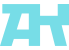

Задача
Разработать логотипы в разных стилистиках и собрать понятный логобук, в котором зафиксированы правила использования знака, цветов, типографики и композиции.

Разработать логотипы в разных стилистиках и собрать понятный логобук, в котором зафиксированы правила использования знака, цветов, типографики и композиции.
Создана серия логотипов и сверстан логобук: основные и альтернативные версии, охранные поля, минимальные размеры, цветовые комбинации, запрещенные приемы и примеры применения.
Растровая графика
Векторная графика
UI/UX, прототипирование
Этот проект был посвящен разработке логотипов в разных визуальных подходах и последующей сборке логобука. Задача состояла не в создании одного знака, а в проработке нескольких стилистик, чтобы показать диапазон решений и зафиксировать их в цельной системе.
В рамках проекта нужно было проработать разные типы логотипов: стилизацию животных, сюжетный логотип, геометрический знак и шрифтовое решение. Каждое направление требовало своего характера, пластики формы и принципа композиции.
Отдельный блок работы был связан с логобуком: важно было не только создать знаки, но и оформить понятную подачу с правилами использования, композицией, вариантами применения и общей визуальной структурой проекта.
Две линейки логотипов стилизации животных с разной концепцией: знаковая (ехидна, утконос, муравьед) и персонажная (заяц, барсук и опоссум).
Логотип для бренда кошачьего корма, построенный на сочетании трех слов: власть + грация + свободный полёт.
Знак в виде масок для музея театрального искусства. Решение строится на геометрии, ритме форм и визуальной отсылке к театральной культуре.
Логотип для клуба метателей ножей. Логотип построен на типографической метафоре — слово превращается в форму ножа.
Я открыт к новым проектам и сотрудничеству. Если хотите обсудить проект, идею или просто задать вопрос — напишите! Выберите удобный способ связи, и я обязательно отвечу.